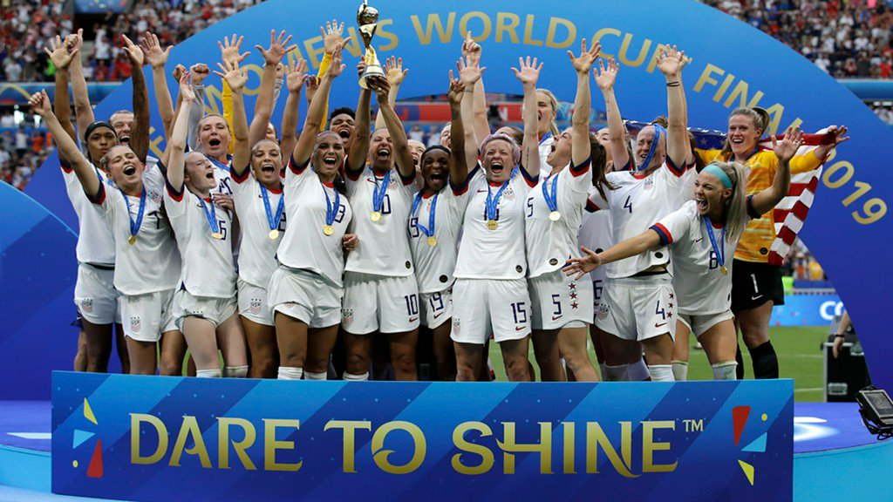
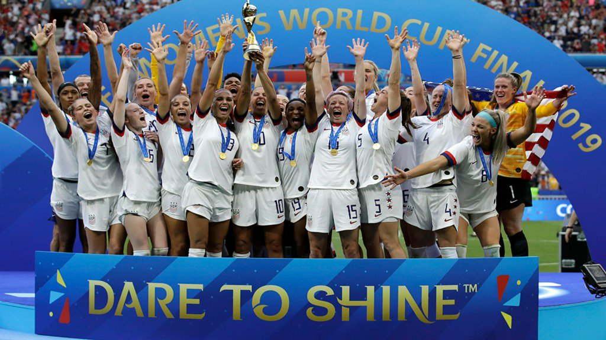

Welcome I just have a quick question, do you want to have the best summer ever? Well if you
do you are in the right spot. This is the National U.S.womens soccer camp where we will train
and improve our skills while still having the best time playing games and talking to famous guest
speaker. This camp with span from July 11- July 13. From a Friday to a Sunday we will be training
at the women's soccer facility. this camp with give girls ages 15 and up a chance to be recognized
by college coaches. and a guest speaker the head
coach of the womens team Emma Hayes is also going to be speaking about how to make the National
Womens
team. The players on the team will be the coachs and each coach will be assigned a team and they
will
get a certain amount of girls, train, and then scrimmage the other teams. In this camp we will be
training a
lot but our intentions are to help girls get recognized by colleges and in general just get better.
This camp is going to be an overnight
3 day camp that will be focused around soccer and speakers.
This is a picture of the National Women's Soccer Team
This picture is when the U.S. women's soccer team wins inaugural W Gold Cup after beating Brazil 1-0 in the finals on March 10
2024
when Lindsey heaps scored the one and only goal to win the game.
 
